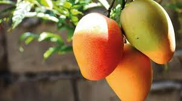

Fruits

A mango is an edible stone fruit produced by the tropical tree Mangifera indica. It is believed to have originated in southern Asia, particularly in eastern India, Bangladesh, and the Andaman Islands.[1] M. indica has been cultivated in South and Southeast Asia since ancient times resulting in two types of modern mango cultivars: the "Indian type" and the "Southeast Asian type".[2][3] Other species in the genus Mangifera also produce edible fruits that are also called "mangoes", the majority of which are found in the Malesian ecoregion.[4]